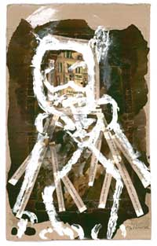

THE ANIMAL, TO THE LETTER
translated by Rachel Price
This animal is called Panrhetor. He's visible and has shape. The shape can be described, indeed it fairly begs to be, and here would begin the book, with a primeval order of articulations, a retractable muscle and a deadly claw, with blood coursing in the corridors of a symbol and back towards him-so would the book begin circulating, slowly, veins throbbing, without pause: the animal moves without pause and without pause one must describe him; suddenly his instincts tell him that there where the book begins he's capitulated, that the text is an epitaph or a placard outside a cage, and Panrhetor, swept along by the waters of this phrase, comes up for air, bobs his head on its surface, and disappears inside it. The sentence continues on its course, flowing downwards; beyond, at an arm's length, a whirlpool stirs other waters, and from afar one can see Panrhetor's head emerge. The course he navigates through the roaring storm runs parallel to that of this sentence like a neighboring river, only at this juncture no tributary unites them, and many of the offshoots from our waters turn left or right and lose track of the original course without having taken notice of Panrhetor. In the distance, a wave rises out of the furious current and engulfs the animal; an effusion of spray follows the wave like a second tercet in poetry, and crowned with foam Panrhetor wags his tail and grabs hold of a trunk wedged under rocks. For a while we can't make him out on the surface of the parallel sentence, not until he looses the trunk with a howl and disappears once again beneath the waters. This we can imagine.
We've abandoned the principal course, and skimming along the river bottom we turn off to the left and into a canal. We swim in a darkness sealed in by the elements. We exit into the neighboring stream, and in its depths a glaucous light reveals to us the slowly sinking remains of Panrhetor's discourse. The traces: blood trickles down from a skinned alligator like a question mark; the abyssal rocks, harboring giant eels, are rosettes of Sanskrit script and screens from, cuneiform ciphers from the stock market. The trunk which he'd clung to lies in a jumbled silence; studded with moss and mussels and lodged in the final sands, it turns out to be an effigy of Saint Anthony. Splinters of wood still float about it. We swim closer to examine the figure; reaching out to touch it we feel a current draw nearer and grow stronger and we retreat, under the water, in a wave of nameless knowledge. Carried under the water by a current Panrhetor commands.
From the surges and swells of water carrying us we deduce the volcanic activity of Panrhetor. The course we pursue is momentarily clean, cold and transparent; as soon as we chance upon a rotting leaf or a refuted theorem we realize the data from the stream of information is fresh, inchoate and still in search of a swimmer to channel it. Panrhetor has diverted the course of the neighboring river, and now swims in a deluge of ancient knowledge; pure earth shaking before an elephant, the sluggish soil deliberates between running to the sea or settling into the river bottom forever. Panrhetor flips over in a subaquatic somersault and resolves the indecision: his motion divides the rushing waters into three currents and, swept up by the third, he swerves in the newly formed stream. Subtle currents slither in the depths, lapping at the slate boulders; Panrhetor incorporates them, reversed like salmon, into his tributary. A wave of residual waters descends, laying waste to the riverbanks and doing away with the mollusks: Panrhetor, with the celerity of a beaver, has shorn the banks' trees of their branches as if they were paper, and the dam he's used them to build only lets pass a pure thread of nuclear fluid in which he plays; a flamingo drinking from the mouth of the river observes an unpublished delta of remote, renewed lands emerge slowly from the depths of the water.
This surge of information sweeping us along has an unconscious human force, and the sentence giving it form cannot be followed through to the very last of its bifurcations. Suddenly it moves. A vertical force from a phillipic or a tornado spins it from below, turning it into sophist eddies and watery syllogisms, and a bubbling mass of algae envelops us as our stream melds with others. Hunting season has begun. The body's rhetoric is set in motion. In the distance, Panrhetor's spine flattens; he bucks and dives down. His skin tone darkens, and in a predatory move he masks himself, adopting the color of the depths; he closes in on and devours a killer whale. He finds himself suddenly challenged head-on by a shark he's pursued; with a flutter of fins the shark steers himself towards Panrhetor, tracing rapid S's as it swims. Panrhetor doesn't move a muscle until the shark is above him; then, with a sudden reversal, his feet seem to change their natural position in his body, the enlarged head is suddenly where an unnamed organ should be, and surrounding the stilled shark is only the reconfigured body and blood in the water like a misread metaphor. Metonymy is a deadly weapon: where the sea serpent saw only a lifeless sexual member floating among the leaves, suddenly there is a bitten and shredded body. For every passion there is a hyperbole, for every figure a dam: Panrhetor's voracity knows not silence. He continues at a distance; in a split second he's bolted over and observes us. His breath is an enormous expiration of spent dates; a fiery breath from Alexandria reaches us. We can see a lit eye gleaming among the shadows. There is a moment of inspiration, like a brilliant coda, and Panrhetor turns, moving away from us with an atavistic murmur of fronds and libraries.
Dejected, we let ourselves be carried by a novel current that submerges and cleans us. We can only intuit the latent order of the waterways and lakes of the world. With the passing days, the rivers bring us new debris from an archive that beats and is transformed by Panrhetor's pulse. A sheet of paper suggests Panrhetor's name is the result of a collision between Punk and Rhetorician. Another tells of his friendship with Hanuman, the grammatical monkey, and with the mad bird that perches in paper trees of his own making. Etymologies, we know, are courtesy of profound crevasses: they are amoebas blundering about in the night of the unconscious. We leave behind the erudite floods of the islands, the familiar epics of the archipelago, the abstract and elemental continent. In the continent's shores, in the face of the animal, an archival pulse animates the birth of this phrase, which proceeds from the letter towards the beast without looking back.